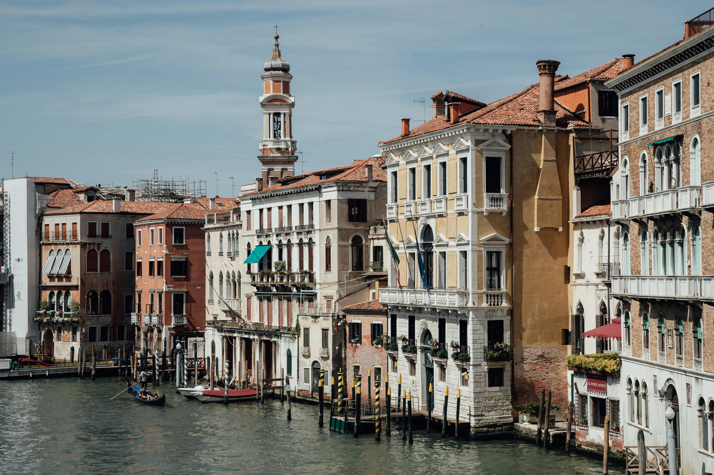
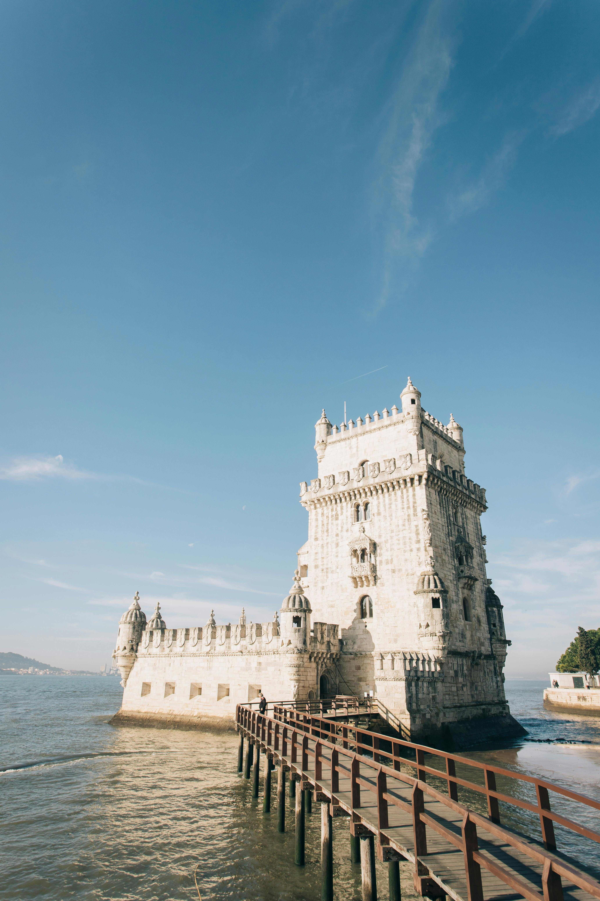

O arco do triunfo é um dos síbolos masi famosos de Paris e representa as
vitórias do exército francês sob as ordens de Napoleão, que ordenou seu construção.
O Arco do Triunfo é, junto com a Torre Eiffel, o monumento mais represntarivo de Paris.
Cortado a maior parte da cidade, tem o seu "início" na laguna perto da
estação decpmboios, fazendo uma curva em forma de grande "S" pelos distritos
centrais,os sestieri, e termina junto à Basílica de Santa Maria della Salute,
próximo à Piazza San Marco. Tem uma profundidade média de cinco mestroe. A
forma mais comum de atravessar é por gôndola ou vaporreto, um tipo de
transporte público de água amplamente utilizado devido à disposição da cidade
Ao Viajar ao logo do Grande Canal, poderá ver marcas icónicas de Veneza,
como por exemplo: A Igreja Scalzi. Palácio Loredan Vendramin

a cosntrução inciou-se em 1514 e ficou concluída em 1520. Como síbolo do
prestígiodo Rei,a sua deoração ostenta a simbologia prórpia do Manuelino - calabres que
envolvem o edífício, rematando-o com elegantes nós, esferas armilares, cruzes de Ordem
Militar de cristo e elemntos naturalistas.
O objetivo era criar um sitema estratégico de expanção doimério ibérico
nas américas. essa ocupação resultou, sobretudo,da política econômica
mercantilista praticada por Portugal e espanha, desdeo séciulo XV. O Forte foi
erguidona confluência do rio Guamá com a Baía de guarajá
